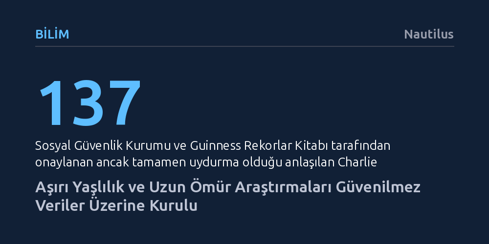

BILIM · Nautilus · 2026-10-21
Dünyanın en yaşlı insanlarına dair bilimsel veritabanları; doğrulanmamış haberler, emekli maaşı dolandırıcılıkları ve bürokratik hatalarla dolu kayıtlar üzerine kurulmuştur. 'Altın standart' sayılan uzun ömür araştırmalarının dayandığı süperasırlık verilerinin büyük kısmı güvenilir bilimsel denetimden yoksundur.
Uzun yaşamın biyolojik sırrını çözdüğünü öne süren prestijli araştırmaların, aslında sahte yaş kayıtları ve metodolojik özensizliklerle sakatlanmış olabileceğini gösterir.

Aşırı yaşlı insanları incelemeye başlayan araştırmacılar, ilk bakışta bilimsel titizlikle belgelendiği sanılan kayıtların aslında büyük bir absürtlük barındırdığını fark ediyor. Bunun en çarpıcı örneklerinden biri, bir dönem ABD’nin en yaşlı kadını ilan edilen Adele Dunlap vakasıdır. Eski bir sigara tiryakisi olan Dunlap, resmi evrakların yaşını yanlış gösterdiğini, belgelerde iddia edildiği gibi 113 değil, aslında on yaş daha genç olduğunu neredeyse on yıl boyunca bıkmadan usanmadan dile getirdi. Fakat trajikomik bir biçimde ne ailesi ne de yetkililer ona inandı; kendi yaşını hatırlayamayan bir ihtiyar muamelesi gördü.
Bilim çevreleri ve basın ise kadının kendi beyanını dinlemek yerine resmi evrak fetişizmine sığınmayı tercih etti. Bir muhabirin 113 yaşında olmanın nasıl bir duygu olduğunu sorması üzerine Dunlap, doğrudan soru sahibinin gözlerinin içine bakarak "Ben 104 yaşındayım" cevabını vermişti. Ancak muhabir, süperasırlık kayıtlarını tutan Gerontoloji Araştırma Grubu’nun (GRG) bu yaşı çoktan onayladığını söyleyerek onu derhal susturdu.
Guinness Rekorlar Kitabı’nın yaş kayıtlarını da tescilleyen GRG direktörü Robert Young, ölüm döşeğindeki bu kadına bizzat yanıldığını ve ülkenin en yaşlı insanı olarak onaylandığını bildirdi. Dönemin ABD Başkanı Barack Obama bile 113. yaşını kutlayan resmi bir tebrik kartı gönderdi. Biyografideki açık tutarsızlıklara ve şahsın bizzat itirazına rağmen, kağıt üzerindeki hatalı veri gerçekliğe galip geldi.
Dunlap vakası münferit bir bürokratik aksaklıktan ibaret değildir; doğrudan modern uzun ömür araştırmalarının veri toplama yöntemindeki derin kusurları yansıtır. Küresel çapta aşırı yaş verilerinin yaklaşık yarısını tek başına tescilleyen Robert Young gibi isimlerin metodolojisi incelendiğinde tablonun ciddiyeti daha da netleşmektedir. Young, geçmişte etnik köken ile koşu performansı arasında ırkçı ve bilimsellikten uzak varsayımlar öne süren, fiziksel zindelikle evrimsel uyumu birbirine karıştıran tartışmalı bir teze imza atmış bir araştırmacıdır.
Buna rağmen Young, ABD’deki en prestijli klinik çalışma olarak kabul edilen New England Asırlıklar Çalışması’nın da veri mimarı olmuştur. Kimin 100 yaşında sayılıp sayılmayacağını bizzat belirlemiş; denek toplama, demografik verileri doğrulama ve yaş onaylama süreçlerinde kilit rol oynamıştır. Peki bu devasa veritabanının vakaları nasıl toplandı? Cevap şaşırtıcı derecede basittir: İnternette haber taraması yaparak ve yaşlı insanlara dair gelen talep edilmemiş e-postaları bekleyerek.
Çalışmayı yürüten bilim insanları, veri toplama yöntemindeki bu bariz çarpıklığı denetleyebilecek hiçbir somut mekanizmaya sahip olmamalarına karşın, örneklem yanlılığının asgari düzeyde olduğunu iddia edebilmişlerdir. Tek bir kişinin kişisel kanaatlerine ve filtrelenmemiş internet dedikodularına dayanan bir veri seti, bugün genetikten tıbba kadar pek çok alanda uzun yaşamın sırlarını çözdüğünü savunan makalelere zemin oluşturmaktadır.
Aşırı yaşlılık kayıtlarının güvenilmezliğini artıran bir diğer önemli unsur ise ekonomik çıkarlardır. Resmi kayıtlarda 100 yaşını aşmış görünen birçok birey, aslında çoktan vefat etmiş fakat ölümleri emekli maaşlarının kesilmemesi için yakınları tarafından gizlenmiş kişilerden oluşur. İtalya'nın Bellavista di Trivero köyünde yaşanan Irma Borgoglio vakası bunun somut ve sarsıcı bir kanıtıdır. 103 yaşında olduğu sanılan Borgoglio, 63 yaşındaki işsiz oğluyla birlikte yaşıyordu ve uzun süredir kimseyle temas kurmayan bir münzevi olarak biliniyordu.
Komşuların şüphelenmesi üzerine eve gelen polis ekipleri, Irma'yı mutfakta ayakta durur halde buldu; ancak kadın dakikalar önce değil, aylar önce hayatını kaybetmiş ve derin dondurucuda muhafaza edilmişti. İşsiz oğlu, annesinin emekli maaşını çekmeye devam edebilmek için cesedi aylarca sandık tipi dondurucuda saklamış, polis kapıya dayandığında ise cesedi alelacele çıkarıp mutfağa yerleştirmişti. Bu tür adli vakalar buzdağının sadece görünen kısmıdır ve resmi nüfus kayıtlarının sahte asırlıklarla dolmasına doğrudan zemin hazırlamaktadır.
Uydurma biyografilerin kamuoyu ve kurumlar nezdinde nasıl kolayca meşrulaştırılabildiğinin en uç örneği 1979 yılında Guinness Rekorlar Kitabı’na giren Charlie Smith’tir. Sosyal Güvenlik Dairesi yetkilileri, Smith’in 1859 yılında New Orleans’ta köle olarak satıldığını gösteren belgeler bulduklarını iddia ederek onu 137 yaşında tescilledi. Olayın aslı ise Smith’in meyve toplayıcılığı yaparken bir kimlik edinmek zorunda kalmasıyla başlamıştı; kurum ona kütükten rastgele bir kimlik bulup 113 yaşında olduğunu söylemiş, ardından da ilgili dosyayı kaybetmişti.
Smith bu hatayı bir fırsata dönüştürerek kendini ulusal bir figür haline getirdi. Anlatılarında sürekli anakronik çelişkiler vardı; örneğin 1975'te 132 yaşında olması gerekirken 144 yaşında olduğunu öne sürüyor, Başkan Garfield’ın suikastçısını bizzat yakaladığını, Jesse James ile at sürdüğünü ve Billy the Kid’in peşine düştüğünü iddia ediyordu. Kimse bu masalların doğruluğunu araştırmadı; aksine Apollo 17 uzay görevinin fırlatılışına VIP konuk olarak çağrıldı ve canlı yayında aya gidildiğine inanmadığını söyleyerek televizyon ekranlarında boy gösterdi.
Smith’in karizması karşısında eleştirel akıl tamamen devre dışı kaldı. Ripley’s Believe It or Not! programı onu ekrana çıkardı, BBC onun hakkında belgesel çekti ve PBS hayatını hiçbir süzgeçten geçirmeden televizyon filmine dönüştürdü. Öldüğünde The New York Times, onun "muhtemelen" 137 yaşında olduğunu yazarak bu kolektif kurguyu taçlandırdı. Oysa ortada bilimsel bir mucize değil, herkesin inanmak istediği devasa bir yalan vardı.
Oxford Üniversitesi Nüfus Yaşlanması Enstitüsü'nden Ig Nobel ödüllü kıdemli araştırmacı Saul Justin Newman'ın aktardığı bu bulgular, uzun ömür araştırmalarının üzerine kurulduğu temel varsayımları sarsmaktadır. Eğer en yaşlı insanlar veritabanı bürokratik hatalarla dolu kütük kayıtlarından, denetlenmeyen internet hikayelerinden ve emekli maaşı hilelerinden türetilmişse, bu kişilerin genetik yapısını veya beslenme alışkanlıklarını inceleyen tıp araştırmalarının geçerliliği de şüpheli hale gelir.
Bilim dünyası, mucizevi uzun yaşam öykülerine karşı duyulan romantik heyecanı bir kenara bırakıp demografik verilerin nasıl toplandığını sıkı bir eleştiriye tabi tutmak zorundadır. Aksi takdirde, tıp ve gerontoloji literatürü; gerçek asırlıkların biyolojisini anlamak yerine, derin dondurucuda saklanan cesetlerin ve kendi uydurduğu masala inanan sahtekarların hayali istatistiklerini analiz etmeyi sürdürecektir.